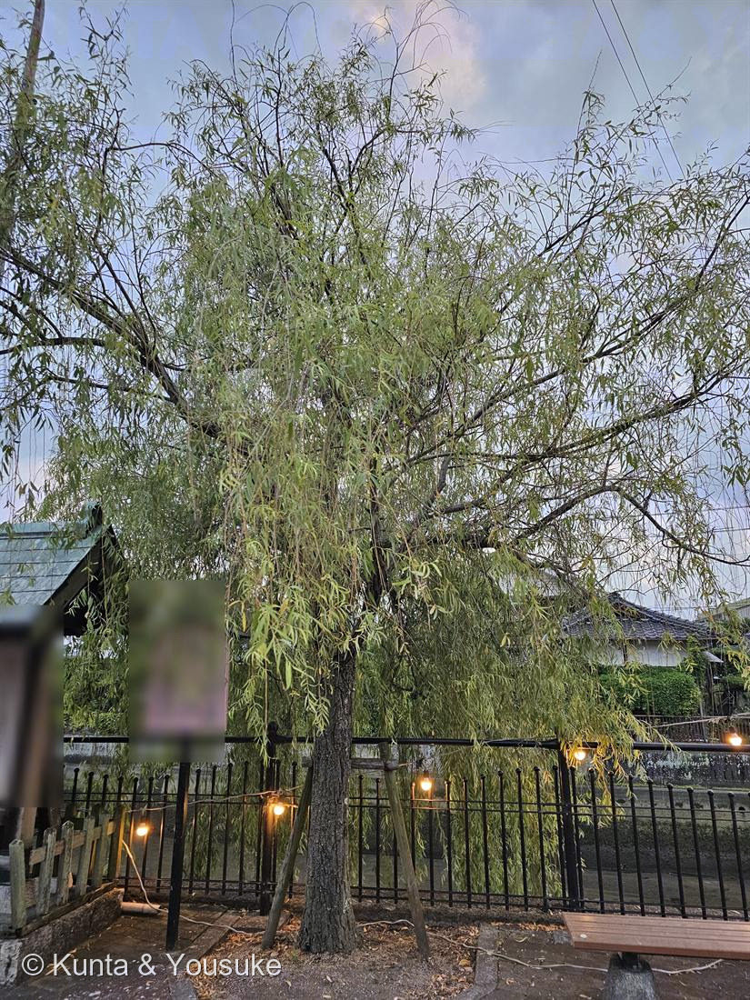
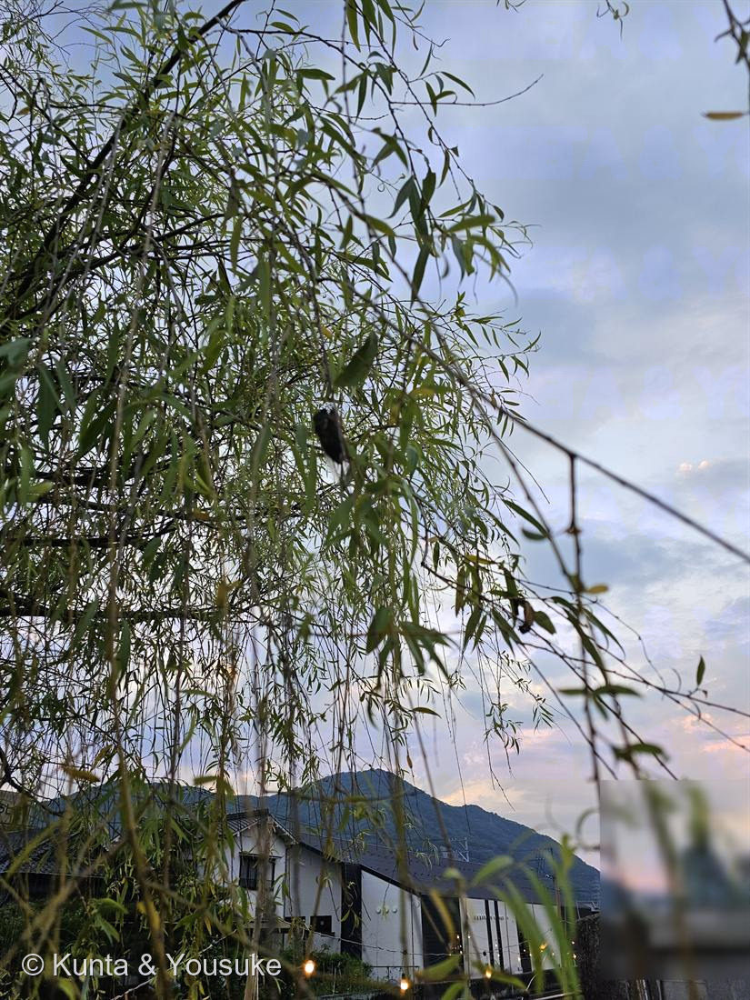

地図を読み込んでいるよ…
🔍 写真も地図も、押しているあいだ拡大して見られるよ（スマホは指を置いてすこし待ってね）。
🌍 の地図＝この子がもともと自生している場所を緑に。中国（内陸〜北部）が原産。街路樹・水辺の植栽として世界へ広まった。日本へは古い時代に渡来し、各地の川辺・堀ばた・街路に植えられている。
⭐ふるさとは中国（内陸〜北部）。街路樹・水辺の植栽として世界へ広まった。⚠学名 babylonica（バビロンの）は取りちがえ——リンネが聖書の“バビロンの柳”にちなんで名づけたけれど、そこはメソポタミアで、この子の原産地じゃない（110サルスベリ indica と同じ“名前と原産地のずれ”）。⚠日本は塗っていない——古い時代に渡来した植栽で、日本はふるさとじゃないよ。
⚠ 地図は国（日本と中国だけ県・省）までしか塗れないから、ほんとうの分布より広く見えていることがあるよ。地図はだいたいの場所。正確なところは、上の文を見てね。
シダレヤナギ（枝垂柳）
Salix babylonica
別名 · イトヤナギ（糸柳）／英名 weeping willow／ 原産 · 中国（街路・水辺の植栽として世界へ）／ 花期 · 春3〜4月（雌雄異株）／ ⭐垂れる細枝／水辺の樹木／図鑑で初めてのヤナギ科
ヤナギ科 · Salicaceae（ヤナギ属 Salix）── 図鑑で初めてのヤナギ科
燻太さんの見立て「垂れた枝振りが特徴的で、風にそよぐ姿は夏の夕暮れ時にぴったり。」──シダレヤナギ。水辺の樹木で、街の枝垂れ柳はほとんどが雌のクローン。学名 babylonica は“中国原産なのにバビロン”の取りちがえ。
名前と学名の由来 ── 「垂れる枝」と、リンネの取りちがえた“バビロン”
- ⭐和名「枝垂れ柳」＝枝が長く垂れ下がるすがたから。別名の「糸柳（イトヤナギ）」は、細い枝を糸に見立てた名前だよ。
- ⭐⭐⭐学名 Salix babylonica（＝バビロンの柳）は、じつはリンネの“取りちがえ”。──旧約聖書・詩篇137篇の「バビロンの川のほとり、柳（willows）に竪琴をかけて、わたしたちは泣いた」という一節にちなんで、リンネが名づけた。でも、その聖書の“柳”は、ほんとうはヤナギではなく Populus euphratica（ユーフラテスポプラ）だったとされているし、しかもシダレヤナギの本当のふるさとは中国——バビロン（メソポタミア）じゃないんだ。
- 📌これ、110 サルスベリの indica（＝インドの、なのに本当は中国原産）とそっくりの“名前と原産地のずれ”。学名は、つけた人の勘ちがいや、通り道の記憶を、そのまま抱えていることがあるんだね。
- 属名 Salix は、ヤナギのラテン古名。あとで出てくる「サリシン」「サリチル酸（アスピリン）」の名の、おおもとでもあるよ。
この植物のこと
- ヤナギ科ヤナギ属の落葉高木。図鑑で初めてのヤナギ科だよ。
- ⭐枝が長く、細く垂れ下がる（写真①）。風にそよぐすがたは、燻太さんの言うとおり、夏の夕暮れにぴったり（写真②）。
- ⭐葉は細長い披針形。互生し、縁に細かい鋸歯。裏は白っぽい。
- ⭐⭐水辺が大好き。湿った土でよく育ち、根が水をぐんぐん吸う。だから、川辺・池のほとり・堀ばたによく植えられているんだ。今日の子も、水辺の柵ぎわにいたね。
- ⭐成長が早く、挿し木（枝を挿すだけ）でよく根づく。折れた枝からも芽を出す、つよい再生力。
- ⭐⭐⭐街で見るシダレヤナギは、ほとんどが“雌株のクローン”。挿し木で世界じゅうに広まったから、あちこちの柳が、遺伝的にそっくりな兄弟なんだ。📌108 オオカナダモ（日本では雄株ばかり）と対になる、「片方の性だけで、クローンで広がった子」だよ。
- 💊薬の話：ヤナギの樹皮には「サリシン（salicin）」という成分があって、これがアスピリン（サリチル酸）のルーツ。昔から世界のあちこちで「柳の皮は、熱や痛みにきく」と使われてきた。サリチル酸（salicylic acid）の名も、属名 Salix からきているんだよ。
⭐ 燻太さんの「夏の夕暮れにぴったり」への答え ── 水辺の樹木
- 垂れた枝が涼しげだから水辺に似合う、という見立ては大正解。シダレヤナギは湿地・水辺の申し子。根が水を好み、乾いた土より、しっとりした土でぐんぐん伸びる。
- だから昔から、川辺・堀ばた・池のほとりに植えられて、日本の水辺の風景をつくってきた。夕暮れの水辺と柳——幽霊や河童が出る、なんて民話の舞台になったのも、この「水辺にゆれる柳」の、ちょっと不思議な気配からなんだ。
同定について ── 「垂れる」か「くねる」か
- ⭐長く垂れ下がる細い枝＋細長い披針形の葉＋水辺の植栽——この組み合わせは、シダレヤナギならでは。
- 近い仲間に、枝が竜のようにくねる「ウンリュウヤナギ（雲竜柳）」や、枝が黄金色の「セイヨウシダレヤナギ（キンシダレ）」などの園芸柳もいる。この子は、素直にまっすぐ垂れる細枝だから、シダレヤナギ。
- 📌おまけは、同じヤナギ属のウンリュウヤナギ。同じ「枝」で勝負しているのに、いっぽうは垂れる、いっぽうはくねる。同じ属の中で、枝が選んだ“二つの形”をくらべると面白いよ。
参考：Wikipedia「シダレヤナギ」（Salix babylonica・ヤナギ科ヤナギ属の落葉高木／中国原産／枝が垂れる／水辺を好む／雌雄異株・栽培は雌株クローンが多い）／Wikipedia「Salix babylonica」（native to China／学名はリンネが詩篇137の“willows of Babylon”にちなむが、その柳は実は Populus euphratica とされる誤称）／Wikipedia「Salicin」（ヤナギ樹皮のサリシン＝サリチル酸／アスピリンの起源・属名 Salix が語源）